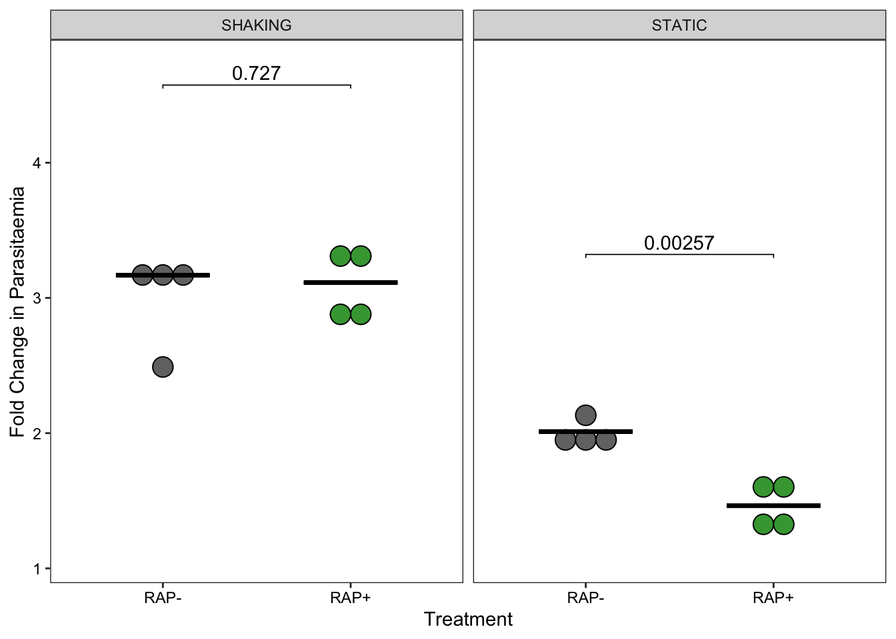

Figure 1C. Replication of mock- (solid line) and RAP-treated (dashed line) parasites from two clonal lines of PPLP1:loxNint/PPLP2:loxPint, C1 and C2, over three erythrocytic cycles (error bars, ± SD, triplicate RAP treatments with different blood sources). There is no significant difference in replication rates.
Supplementary Figure 1B. Replication of PLP1:loxPint clonal line prior to second modification. The modified parasites show a normal replication rate across two cycles (error bars, ± SD, triplicate RAP treatments with different blood sources).
Differential proteomics of SUB1-null schizonts identifies proteins discharged into the PV at egress
Figure 2C. Volcano plot showing enrichment of 11 proteins (red) in the C2-washed schizonts compared to C2-arrested SUB1-null schizonts (values averaged from biological triplicates).
Conditional genetic ablation of LCAT reduces blood stage proliferation
Figure 4E. RAP-treatment results in reduced replication rate in two clonal lines, F10 and B10, of LCAT:2loxPint parasites. Data shown are averages from triplicate biological replicates using different blood sources (error bars, ± SD).
Figure 4F. RAP-treatment results in reduction in both number and area of clonal plaques formed over five erythrocytic cycles (10 days of growth) in LCAT:2loxPint clonal lines (individual points represent the area of each plaque, density plot shows distribution of these points and the boxplot provides median summary statistics).
Figure 5D. LCAT-null schizonts show a higher number of abnormal egress events (as described in Figure 5B) compared to mock-treated schizonts (paired Student’s t-test). Each paired datapoint represents a 30-40 min video of RAP- and mock-treated LCAT:2loxPint schizonts (one group randomly stained with Hoechst DNA stain in each video) undergoing egress (from a total of 7 independent experiments). Size of each datapoint represents the total number of egress events (abnormal + normal) counted in the video.
LCAT:2loxPint invasion assay (Figure 5E)
Show the code
#Figure5Elcat.invasion <-read.csv("./Rawdata/lcat_invasionassay.csv")lcat.invasion.FC<-spread(lcat.invasion,Timepoint,Parasitaemia,fill=0) %>%transmute(Line,Treatment,Condition,Replicate,FoldChange=AFTER/BFOR)pinvasion<-ggplot(lcat.invasion.FC,aes(x=factor(Treatment),y=FoldChange)) +geom_dotplot(aes(fill = Treatment), # Use fill = Species here not in ggplot()binaxis ="y", # which axis to bin alongbinwidth =0.2, # Minimal difference considered diffeerentstackdir ="center", # Centereddotsize =0.75 ) +stat_summary(fun = median, fun.min = median, fun.max = median,geom ="crossbar", width =0.5) +facet_grid(.~Condition,labeller=labeller(Condition=c(SHAK="SHAKING",STAT="STATIC"))) +theme_bw() +theme(axis.text=element_text(color="black"),panel.grid=element_blank(), panel.background=element_blank(),legend.position="none") +scale_fill_manual(values =c("gray45","#42A341")) +xlab("Treatment") +ylab("Fold Change in Parasitaemia")pwc <- lcat.invasion.FC %>%group_by(Condition) %>%t_test(FoldChange ~Treatment, p.adjust.method ="bonferroni") %>%add_xy_position(x ="Treatment", fun ="mean_sd", dodge =0.8)pinvasion <- pinvasion +stat_pvalue_manual( pwc, label ="p", tip.length =0.01,bracket.nudge.y =1 ) +scale_y_continuous(expand =expansion(mult =c(0.1, 0.1)))#plotly does not work with geom_dotplot#ggsave(filename = "invasion.pdf",width=10, height=10, unit="cm")

Figure 5E. Fold change in parasitaemia after 4 h invasion of mock- (-RAP) and RAP-treated (+RAP) LCAT:2loxPint schizonts under shaking and static conditions. Static cultures show a significantly lower fold change in parasitaemia in RAP-treated parasites compared to mock-treated controls, while show no significant difference between the groups was observed in shaking cultures (error bars, ± SD, four replicate RAP treatments with different blood sources; individual points represent each replicate).
Figure 5G. A subtle decrease in the rate of RBCM poration (paired Student’s t-test) was observed in RAP-treated schizonts compared to mock-treated schizonts. Each paired datapoint represents a 30-40 min video of RAP- and mock-treated LCAT:2loxPint schizonts (one group randomly stained with Hoechst DNA stain in each video) undergoing egress in the presence of E64 (from a total of 3 independent experiments). Size of each datapoint represents the total number of schizonts counted in the video.
LCAT:2loxPint poration as measured by flow cytometer (Figure 5H)
Figure 5H. Flow cytometry analysis showed emergence of porated parasitized RBCs (iRBCs) that emit higher fluorescence intensity from phalloidin following 30 min of egress in the presence of E64 (30 min + E64) after washing off C2. Samples harvested before washing off C2 (0 min + C2) or maintained in C2 for the same 30 min period (30 min + C2) served as controls. A slight but consistent decrease in proportion of porated (iRBCs) was observed in RAP-treated compared to mock-treated schizonts.
Phosphatidylserine and acylphosphatidylglycerol levels change during egress of LCAT-null parasites
Comparing lipid profiles of RAP- and mock-treated LCAT:2loxPint schizonts just prior to egress (Supplementary Figure S4A)
Shiny applications not supported in static R Markdown documents
Supplementary Figure 4A. Lipidomic analysis of LCAT:2loxPint egress-stalled schizonts following mock-or RAP-treatment at ring stages. The bubble plot shows the fold change (y-axis) in levels of various lipid species (each lipid class denoted with a different colour) in LCAT-null schizonts compared to controls (3 independent biological replicates). No significant change in phospholipid levels were detected between the samples.
Comparing lipid profiles of RAP- and mock-treated LCAT:2loxPint schizonts before and immediately following egress
Lipid changes during egress of RAP-treated LCAT:2loxPint schizonts (Supplementary Figure S4B)
Shiny applications not supported in static R Markdown documents
Supplementary Figure 4B(a). Bubble plot showing the fold change in levels of various lipid species before and after egress of RAP-treated (+RAP) LCAT:2loxPint parasites (6 independent biological replicates).
Lipid changes during egress of mock-treated LCAT:2loxPint schizonts (Supplementary Figure S4B)
Shiny applications not supported in static R Markdown documents
Supplementary Figure 4B(b). Bubble plot showing the fold change in levels of various lipid species before and after egress of mock-treated (-RAP) LCAT:2loxPint parasites (6 independent biological replicates).
Figure 6C. Volcano plots showing fold changes in levels of various phospholipid species occurring during egress of RAP (+RAP) and mock-treated (-RAP) LCAT:2loxPint schizonts. Levels of acylphosphatidylglycerol (acylPG) decrease upon egress of both +RAP and -RAP parasites. An increase in several phosphatidylserine species is observed upon egress of +RAP parasites (comparisons were done across 6 independent egress experiments).
Changes in PS and acylPG species during egress (Supplementary Figure 5A)
Supplementary Figure S5A. Relative peak intensities (depicted as barplots) and log2 fold change (depicted as dot plots) of the significantly altered A) phosphatidylserine and B) acylphosphatidylglycerol species upon egress of mock- or RAP-treated LCAT:2loxPint schizonts.
Supplementary Figure S5B. Relative peak intensities (depicted as barplots) and log2 fold change (depicted as dot plots) of the significantly altered A) phosphatidylserine and B) acylphosphatidylglycerol species upon egress of mock- or RAP-treated LCAT:2loxPint schizonts.